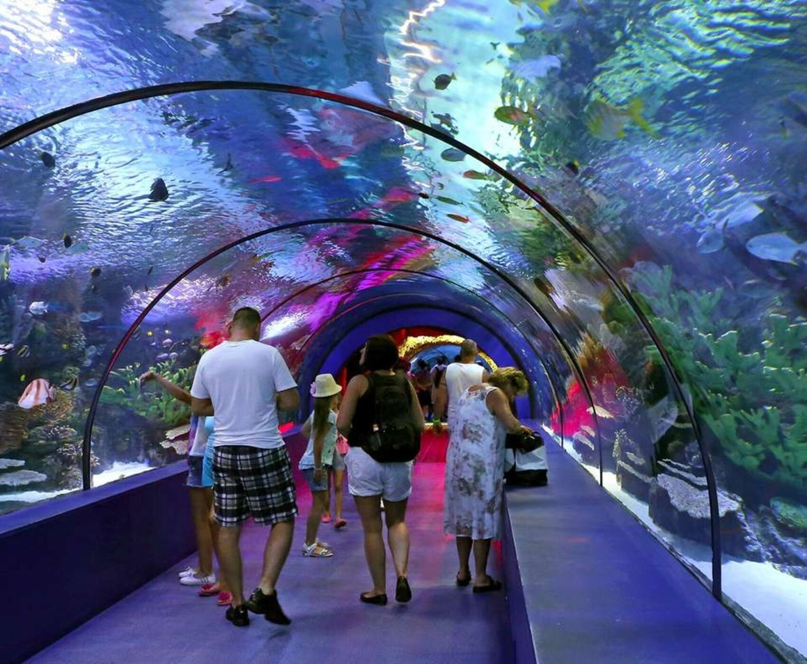
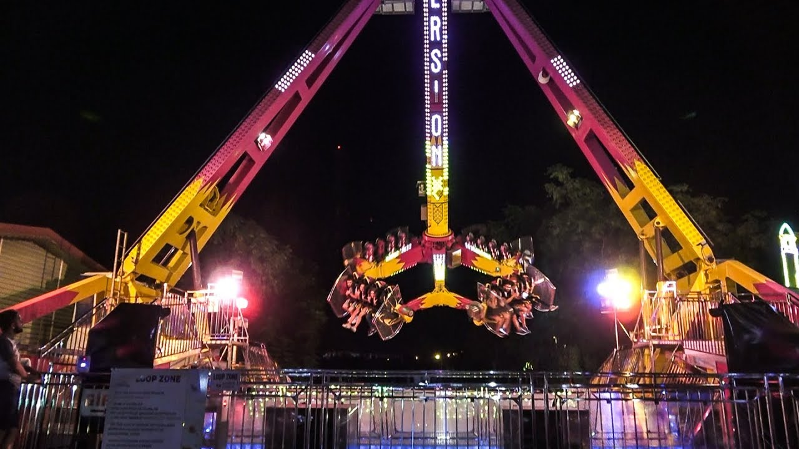
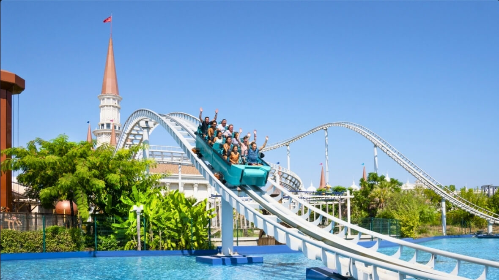
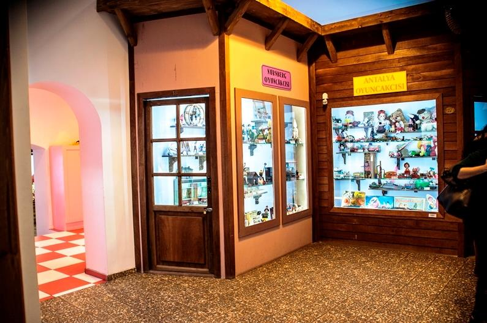
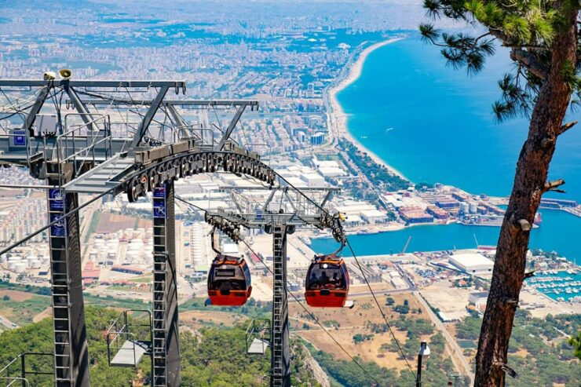

Dünyanın en büyük tünel akvaryumlarından biri olan bu merkez, deniz altı dünyasını keşfetmek için eğlenceli bir seçenek.
Adres: Konyaaltı/Antalya
Ziyaret Saatleri: 10:00 – 20:00
Giriş: Ortalama 400 TL (yaşa göre değişir)

Dev dönme dolabı ve adrenalin dolu oyuncaklarıyla hem çocuklar hem de yetişkinler için keyifli bir eğlence parkı.
Adres: Meltem Mah., Muratpaşa/Antalya
Açık Saatler: 16:00 – 00:00
Giriş: Jetonlu sistem (Her oyuncak için ayrı)

Su kaydırakları, roller coaster’lar ve su altı gösterileriyle Antalya’nın en büyük tema parklarından biri.
Adres: Kadriye, Serik/Antalya
Ziyaret Saatleri: 10:00 – 18:00
Giriş: Ortalama 950 TL

Geçmişten bugüne oyuncakların sergilendiği nostaljik bir mekan. Ailece gezmek için harika bir durak.
Adres: Selçuk Mah., Kaleiçi, Antalya
Ziyaret Saatleri: 09:00 – 18:00
Giriş: 30 TL

Antalya’nın eşsiz manzarasını izleyebileceğiniz bu teleferik hattı, ailece keyifli bir gün geçirmek için birebir.
Adres: Sarısu Mah., Konyaaltı/Antalya
Ziyaret Saatleri: 10:00 – 18:00
Giriş: Gidiş-dönüş 40 TL